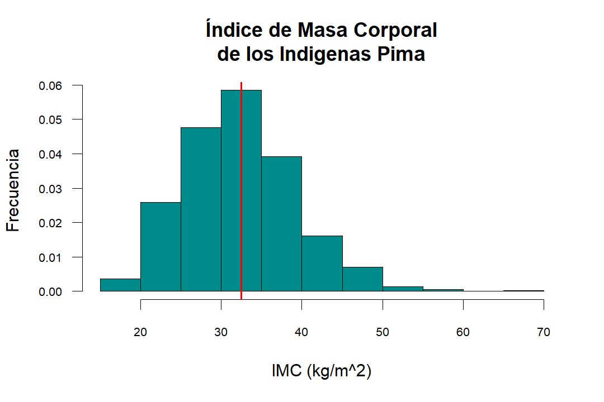
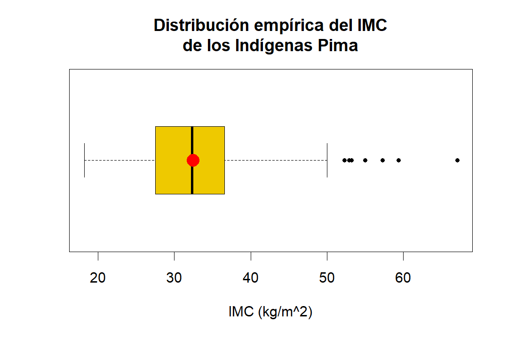
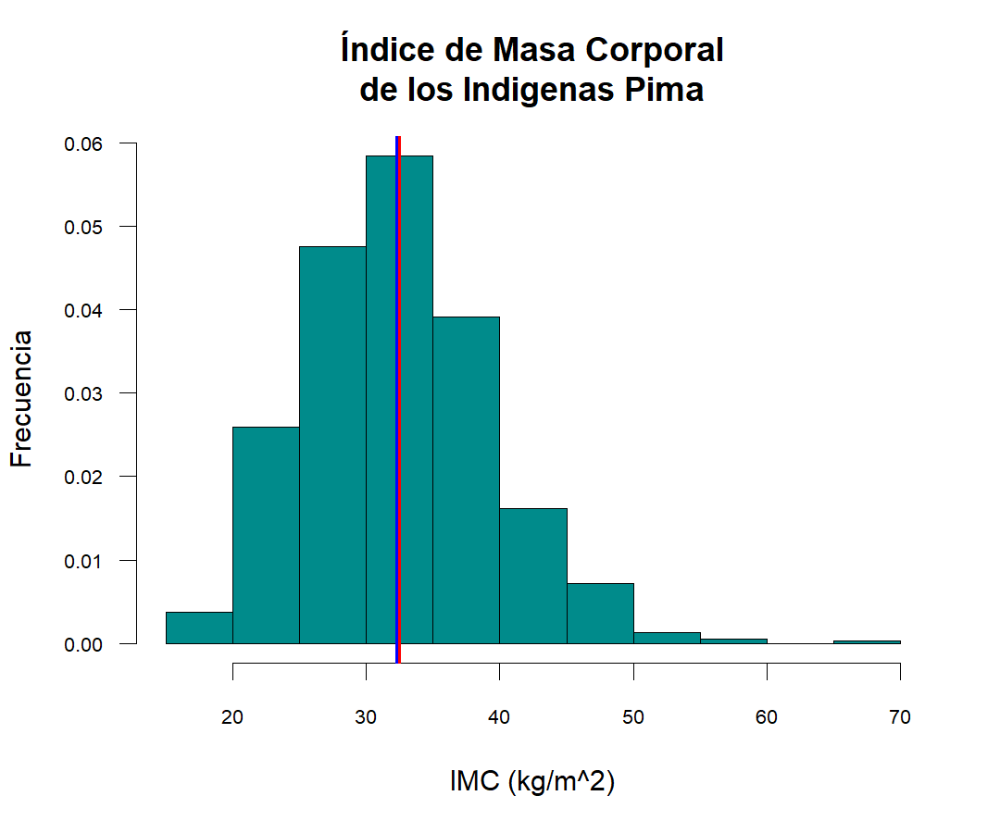
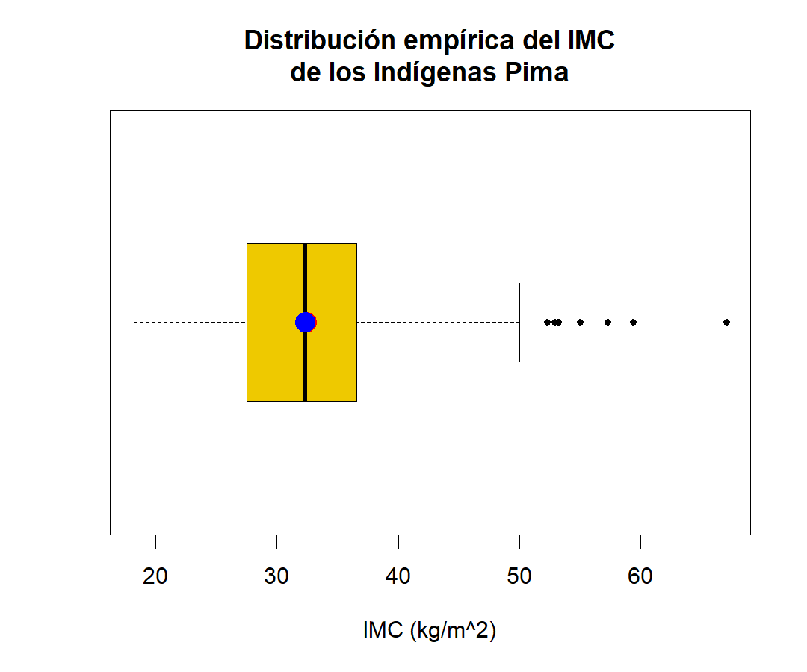
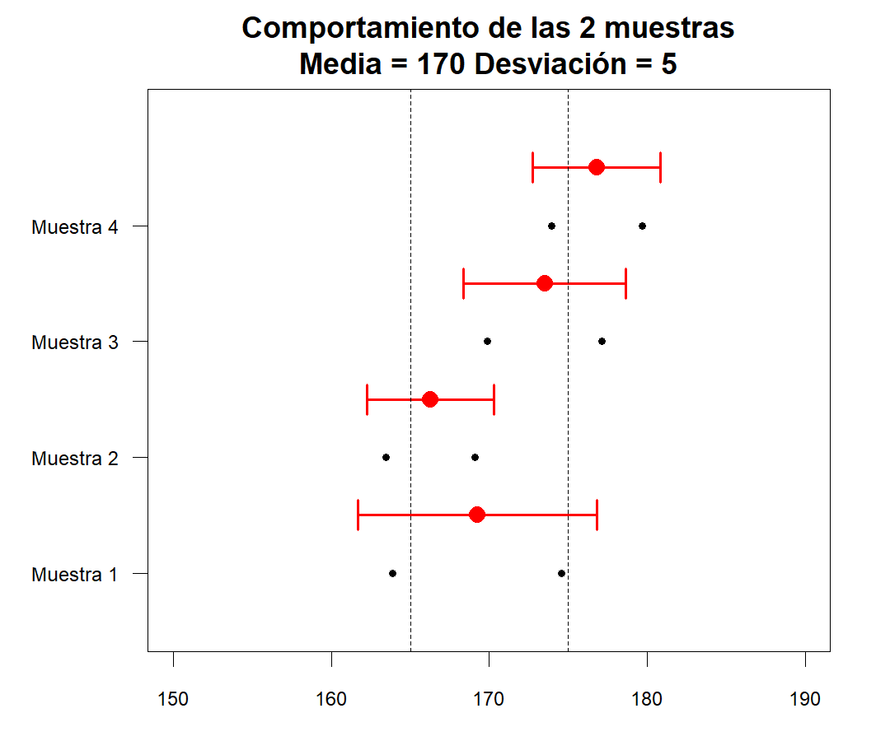
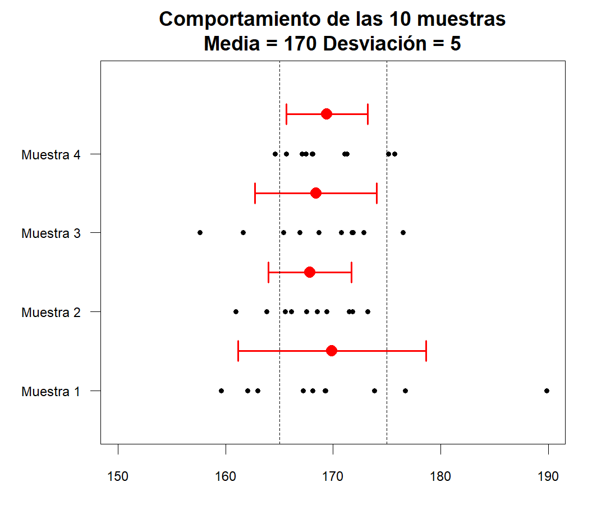
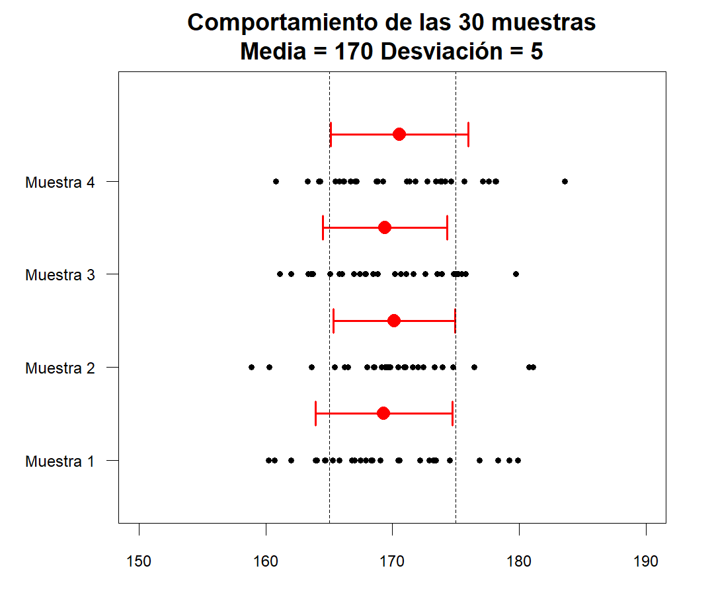
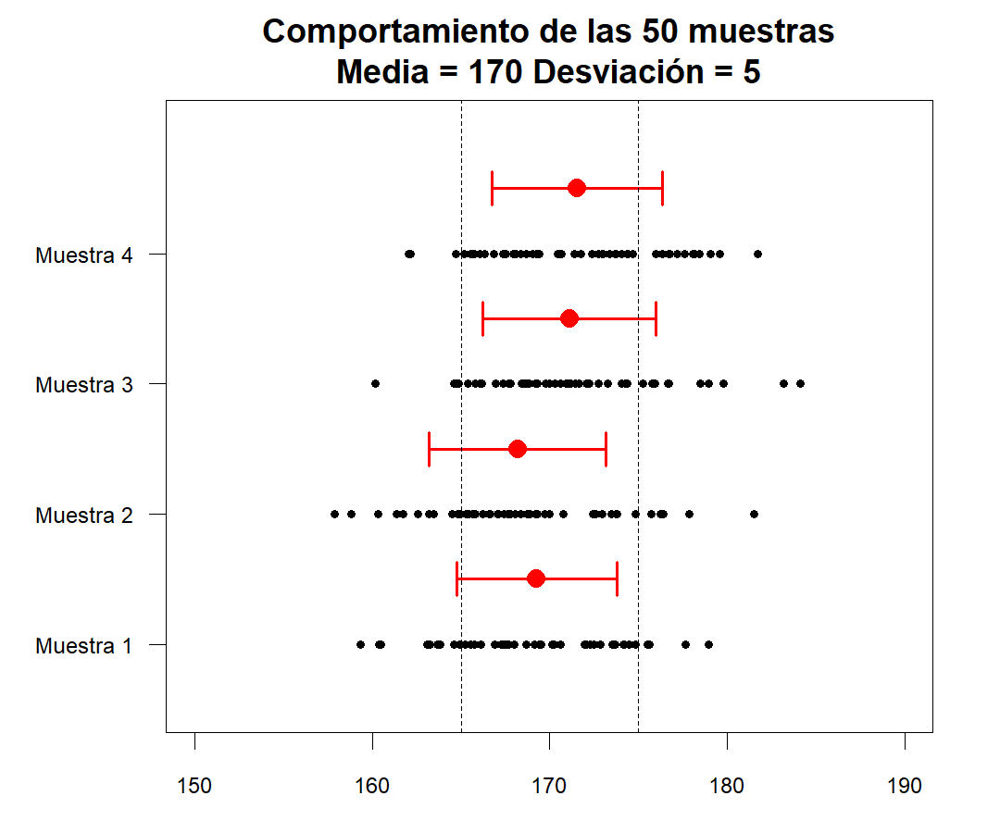
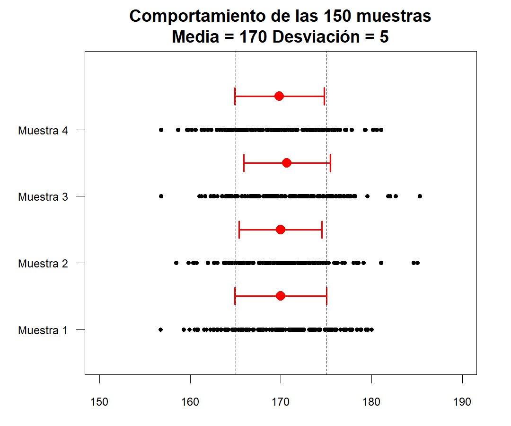

Métodos para resumir la información
Medidas de resumen
Cuando se tiene un conjunto tan extenso de datos, no es conveniente presentar los datos uno a uno y tampoco hacer inferencias sobre “generalidades visuales”. La estadística cuenta con un conjunto de herramientas poderosas para realizar resúmenes de los datos, ya sean cuantitativos o cualitativos, además de los gráficos. Los resúmenes numéricos permiten al investigador profundizar en la descripción de los datos, plantear hipótesis sobre el comportamiento, comparaciones o relaciones de dependencia.
Existe muchas medidas de resumen que dependen de la naturaleza de las variables así como los tipos de estudio y objetivos de investigación, en esta sección veremos los más usados en estadística descriptiva: las medidas de tendencia central y las medidas de dispersión.
Medidas de Tendencia Central
Una medida de central es aquel valor que es útil para resumir en un solo valor el comportamiento de los datos y que denota una posición en el rango de valores de la variable, esto significa que conserva sus unidades. En general para las variables cuantitativas se usan cuatro estimadores de este tipo: la media, la mediana, la moda y la mitad del rango, existe un caso especial para las variables cualitativas que son las proporciones.
Media o promedio
Cuando se presentan resultados estadísticos es común escuchar la palabra “promedio”, por ejemplo: El promedio de las precipitaciones del mes de mayo en Santander fueron de 2300mm, esto no quiere decir que todos los días de mayo las precipitaciones fueron de 2300mm en Santander, este dato resume la cantidad de lluvias que cayeron en el mes de Mayo. De acuerdo a los tipos de datos y el interés del investigador se pueden calcular varios tipos de promedio: La media aritmética, la media armónica y la media geométrica.
La media o promedio indica el centro de masa de los datos.
Es la medida de tendencia central que se calcula al sumar los valores y dividir el total entre el número de valores, también es conocida como el promedio aritmético.
\[\bar{X}=\frac{\sum{x_i}}{n}=\frac{\leftarrow \text{Suma de todos los valores de la muestra}}{\leftarrow \text{Número de valores muestrales}\quad\quad\quad\quad}\]
Si el conjunto de datos es una muestra de una población, la media se denota con \((\bar{X})\) y se lee “equis barra”; cuando se usan todos los valores de la población, la media se simboliza con la letra griega \((\mu)\) y se lee “mu”.
| Símbolo | Descripción |
|---|---|
| \(\sum\) | Representa la sumatoria de todos los valores de un conjunto |
| \(x_i\) | Es la variable que generalmente se usa para representar datos individuales de la muestra |
| \(X\) | Es la variable que representa a la población |
| \(n\) | Representa el número de valores de una muestra |
| \(N\) | Representa el número de valores de una población |
| \(\bar{X}=\frac{\sum{xi}}{n}\) | Es la media de un conjunto de valores de una muestra |
| \(\mu=\frac{\sum{X}}{N}\) | Es la media de todos los valores de la población |
## [1] 33.24089## [1] NA## [1] 32.45746El promedio puede ubicarse gráficamente en un BoxPlot o un histograma para entender cuál es el centro de masa de la distribución de los datos.
hist(datos$mass,col="darkcyan",las=1,cex.axis=0.7,
main="Índice de Masa Corporal\nde los Indigenas Pima",
ylab="Frecuencia",xlab="IMC (kg/m^2)",freq = F)
abline(v=mean(datos$mass,na.rm = T),col=2,lwd=2)
boxplot(datos$mass,pch=20,col="gold2",horizontal = T,
main="Distribución empírica del IMC\nde los Indígenas Pima",
xlab="IMC (kg/m^2)")
points(x = mean(datos$mass,na.rm = T),y=1,pch=19,col=2,cex=2)
La media tiene la desventaja de ser muy sensible a la distancia entre los datos, es decir, si en un conjunto de datos se presentan valores atípicos o extremos, ya sea por errores en la medición o por interacción con variables incontrolables, el cálculo de la media se verá afectado seriamente distrayendo la atención del verdadero fenómeno y ubicándolo en otro punto de referencia.
Media Geométrica
La media geométrica es útil para calcular el promedio de porcentajes, índices, cifras relativas e incrementos porcentuales de ventas, producción u otras actividades económicas.
\[MG=\sqrt[n]{\prod x_i}=\sqrt[n]{x_1 \times x_2 \times x_3 \times \dots \times x_n}\]
El resultado de la media geométrica es menor que el de la media aritmética, además si se tiene valores nulos el resultado de la media geométrica es cero y si existen valores negativos en una muestra impar no es posible calcularla. La media geométrica se utiliza cuando se quiere dar importancia a los valores pequeños de una variable. Otra forma de calcular este valor es aplicando logaritmo natural.
\[MG=\Large{e}^{\sum{\frac{\text{Ln}(x_i)}{n}}}\]
Media Armónica
Es el valor promedio asociado a problemas que involucran velocidades o variaciones con respecto al tiempo.
\[H=\frac{n}{\sum{\frac{1}{x_i}}}\]
La media armónica es sensible a los valores pequeños de un conjunto y no es posible calcularla si existen valores nulos.
Mediana
La mediana es un valor intermedio, ya que la mitad de los datos se ubican por debajo de la mediana y la otra mitad por encima, este valor resuelve en gran medida la desventaja de la media. La mediana suele denotarse como \((\tilde{x})\) y se lee como “equis con tilde”. Para calcular la mediana se deben organizar los datos de forma ascendente y se siguen uno de los siguientes dos procedimientos:
Cuando la muestra es par
Si el número de valores de la muestra es par, la mediana es el valor medio entre los dos valores que se ubican al centro de la tabla.
\[45\quad51\quad57\quad60\quad\textbf{63}\quad\textbf{66}\quad68\quad72\quad75\quad350\] \[\tilde{x}=\frac{63+66}{2}=64.5\]
Cuando la muestra es impar
Si el número de valores de la muestra es impar la mediana es el valor que se ubica exactamente en la mitad de la lista
\[45\quad51\quad57\quad60\quad\textbf{63}\quad66\quad68\quad72\quad75\] \[\tilde{x}=63\]
Observemos que en el primer caso del cálculo de la mediana, la media de ese conjunto de datos es \(90.7\), la cual está muy alejada de la mediana y de la mayoría de los datos, esto se da porque el valor extremo es un dato atípico, en cambio si éste valor fuese por ejemplo \(80\), la media sería \(63.7\) y la mediana no cambiaría.
## [1] 29## [1] 32.3La mediana ubicarse gráficamente, al igual que el promedio, en un histograma para entender cuál es el centro de masa de la distribución de los datos. Para el caso del BoxPlot ésta ya contiene la mediana el cual se representa por la línea que divide la caja.
hist(datos$mass,col="darkcyan",las=1,cex.axis=0.7,
main="Índice de Masa Corporal\nde los Indigenas Pima",
ylab="Frecuencia",xlab="IMC (kg/m^2)",freq = F)
abline(v=mean(datos$mass,na.rm = T),col=2,lwd=2)
abline(v=median(datos$mass,na.rm = T),col=4,lwd=2)
boxplot(datos$mass,pch=20,col="gold2",horizontal = T,
main="Distribución empírica del IMC\nde los Indígenas Pima",
xlab="IMC (kg/m^2)")
points(x = mean(datos$mass,na.rm = T),y=1,pch=19,col=2,cex=2)
points(x = median(datos$mass,na.rm = T),y=1,pch=19,col=4,cex=2)
La Moda
La moda es el valor que se presenta con mayor frecuencia en un conjunto de datos. Cuando un solo valor presenta mayor frecuencia, se dice que el conjunto de datos es unimodal, cuando dos valores presentan la misma y mayor frecuencia, se dice que el conjunto de datos es bimodal, cuando más de dos valores presentan la misma y mayor frecuencia se dice que el conjunto de datos es multimodal, y finalmente cuando ningún valor se repite se dice que no tiene moda.
Para el caso de las variables continuas de intervalo o razón, existen debates en cuando a la estimación de la Moda, algunos argumentan que no es posible estimarla debido a la naturaleza continua de la variable, y otros sostienen que puede hacerse una aproximación estimando el valor que maximiza la densidad de probabilidad.
# Se corre inicialmente la función Moda para crearla
Moda <- function(x,...){
d <- density(x,...)
d$x[which.max(d$y)]
}
## Se calcular la moda de cada conjunto de datos
Moda(datos$age)## [1] 24.01649## [1] 33.0681La moda también puede representarse gráficamente, ya sea en un BoxPlot o un histograma, sin embargo, hay que tener en cuenta que es una aproximación. El problema real es cuando existen más de una moda, ya que es más complicado estimarlas.
hist(datos$mass,col="darkcyan",las=1,cex.axis=0.7,
main="Índice de Masa Corporal\nde los Indigenas Pima",
ylab="Frecuencia",xlab="IMC (kg/m^2)",freq = F)
abline(v=mean(datos$mass,na.rm = T),col=2,lwd=2)
abline(v=median(datos$mass,na.rm = T),col=4,lwd=2)
abline(v=Moda(datos$mass,na.rm = T),col=6,lwd=2)boxplot(datos$mass,pch=20,col="gold2",horizontal = T,
main="Distribución empírica del IMC\nde los Indígenas Pima",
xlab="IMC (kg/m^2)")
points(x = mean(datos$mass,na.rm = T),y=1,pch=19,col=2,cex=2)
points(x = median(datos$mass,na.rm = T),y=1,pch=19,col=4,cex=2)
points(x = Moda(datos$mass,na.rm = T),y=1,pch=19,col=6,cex=2)Los Cuantiles
Los cuantiles son medidas de posición que determinan la ubicación de valores que dividen un conjunto de observaciones en partes iguales. También conocidas como medidas de posición no central, los cuantiles son útiles identificar las concentraciones de datos en un porcentaje de la muestra. Los cuantiles más usados se dividen en 3 grupos:
Cuartiles: Son los que dividen la distribución de los datos en cuatro partes 25%, 50% y 75%. El cuartil 1 \((Q_1)\) representa hasta el 25% de los datos, el cuartil 2 \((Q_2)\) representa hasta el 50% de los datos al igual que la mediana –estos dos valores son iguales–, y finalmente el cuartil 3 \((Q_3)\) representa hasta el 75% de los datos.
Deciles: Son los que dividen la distribución de los datos en 10 partes iguales, 10% hasta 90%. El decil 1 \((D_1)\) representa hasta el 10% de los datos, el decil 5 \((D_5)\) representa hasta el 50% de los datos al igual que la mediana –estos dos valores son iguales–, y así sucesivamente hasta el 90%.
Percentiles: son los que dividen la distribución de los datos en 100 partes iguales. 1% hasta 99%. El percentil 1 \((P_1)\) representa hasta el 1% de los datos, el percentil 50 \((P_50)\) representa hasta el 50% de los datos al igual que la mediana –estos dos valores son iguales–, y así sucesivamente los percentiles representan los valores hasta el 99%.
## 0% 25% 50% 75% 100%
## 21 24 29 41 81## 15% 30% 45% 60% 75%
## 22 25 28 33 41## 1% 5% 95% 99%
## 21 21 58 67## 0% 25% 50% 75% 100%
## 18.2 27.5 32.3 36.6 67.1## 15% 30% 45% 60% 75%
## 25.1 28.4 31.2 33.8 36.6## 1% 5% 95% 99%
## 19.500 22.200 44.500 51.012Medidas de Dispersión
Estas medidas son quizás las más importantes en la estadística, si bien las medidas de tendencia central nos muestran el comportamiento de un conjunto de datos en valores centrales, las medidas de dispersión nos indican los niveles de esparcimiento de los datos con respecto a los valores centrales. Recuerden el ejemplo de la Precisión y la Exactitud.
Los valores de exactitud están relacionados a las medidas de tendencia central, en específico a la media, en tanto a la precisión los valores están relacionados a las medidas de dispersión.
A la hora de la recolección de los datos se pueden presentar sesgos que pueden obstaculizar el estudio en términos de precisión y exactitud, por ejemplo si los instrumentos de medición no están bien calibrados pueden arrojar datos alejados del valor de referencia, aunque con alta precisión, es un error que entorpece la investigación en su conjunto, a este fenómeno se lo conoce como error sistemático. Por otra parte si existen factores exógenos al fenómeno que afecten directamente el experimento, y en su defecto no pueden ser controlables, es posible que la precisión de las medidas sea afectada, lo que también es negativo para la investigación.
En la estadística hay que procurar por minimizar el sesgo y aumentar la precisión, una correcta aproximación de la realidad es tener más precisión que exactitud, pues es muy difícil encontrarse con el caso en el que se cumple ambas. La estadística práctica asume que los datos están libres de error sistemático –o por lo menos están controlados– y que la variabilidad restante se debe únicamente a errores aleatorios que también han sido minimizados.

Si analizamos los tiempos de atención entre las EPS a parir de la media, se observa que el promedio de atención es de 12 minutos en cada una de las EPS, aparentemente el proceso es estable, pero si se ve el comportamiento de acuerdo a cada medida se observa la diferencia de tiempos. En la EPS 1 el tiempo de atención es estable pues no presenta variación con respecto a la media, en la EPS 2 hay una pequeña variación en el tiempo de atención, pero en la EPS 3 hay una gran variación en el tiempo de atención.
Este sencillo ejemplo muestra la sensibilidad al exponer los resultados, si solo se depende de las medidas de tendencia central se puede caer en el error de presentar resultados que a la vista son “buenos” pero resultan dudosos a la hora de no presentar su distribución completa. Para esto es importante conocer las medidas de dispersión, pues con ellas el investigador puede completar sus análisis para presentar resultados más precisos.
Desviación Estándar
Es la medida de variación de los valores de una muestra con respecto a su media, la desviación estándar establece el grado de acercamiento que existe entre los datos y la media, es decir, mide la precisión de los datos con respecto a la exactitud.
\[S=\Large\sqrt{\frac{\sum (x_i-\bar{x})^2}{n-1}}\]
La desviación estándar se define como la media aritmética de los cuadrados de las desviaciones respecto a su media. El valor de la desviación estándar siempre es positivo, cuándo su valor es cero indica que no existe variabilidad entre los datos, a medida que el valor de \(S\) aumente, más variabilidad habrá entre los datos. La ventaja de la desviación estándar es que conserva las unidades originales del estudio, así que concluir con esta medida es útil porque no confunde al investigador en términos de medidas.
El proceso anterior se aplica para la muestra de una población, es decir, la desviación que se ha calculado es la desviación estándar muestral, así que la población también tiene su respectiva desviación estándar.
\[\Large\sigma=\Large\sqrt{\frac{\sum (x_i-\mu)^2}{N}}\]
Observe que la notación de la desviación cambia, ya no es \(S\) sino \(\sigma\), similar a las medidas de tendencia central, las medidas de dispersión utilizan notaciones para diferenciar entre una muestra y una población.
El \(N\) representa el número de individuos de la población, la razón de por qué no se resta una unidad es debido a que las muestras son una extracción de la población, entonces cuando se calculan todas las diferencias cuadráticas entre los datos y la media, quedan \(n–1\) elementos a los que se les puede asignar un número con libertad, antes que se determine el último valor; esto es aplicable a muestras pequeñas, pues cuando aumenta el tamaño de la muestra, la división no se ve afectada notoriamente, por esto en la población no se considera necesario restarle una unidad, pues el tamaño de la población es por mucho mayor que el tamaño de una muestra de dicha población.
## [1] 11.76023## [1] 6.924988Varianza
Usamos el término variación como una descripción general de la cantidad en que varían los valores entre sí (en ocasiones se aplica el término dispersión en vez de variación). El término varianza se refiere a una definición específica, es el cuadrado de la desviación estándar.
\[S^2 \quad\leftarrow \text{Varianza muestral}\] \[\sigma^2 \quad\leftarrow \text{Varianza poblacional}\]
Se dice que la varianza muestral \(S^2\) es un estimador insesgado (sin sesgo) de la varianza \(\sigma^2\), lo que significa que los valores de \(S^2\) tienden a igualar a los valores de \(\sigma^2\) cuando el tamaño de muestra aumenta, en vez de tender a subestimar o sobrestimar los valores de \(\sigma^2\).
Relación variación-muestras
n=2

n=10

n=30

n=50

n=150

Desventaja
Nota: Los artículos de revistas y las publicaciones científicas suelen usar DE o SD, para referirse a la desviación estándar y VAR para la varianza.
## [1] 138.303## [1] 47.95546